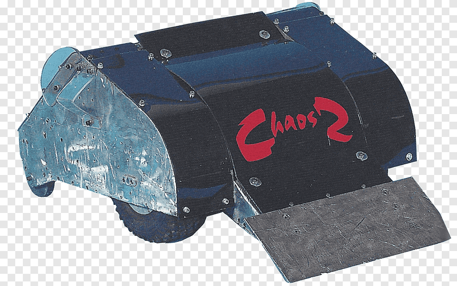

Este robot fue un proyecto que puso a prueba las habilidades de los estudiantes de tercero de bachillerato
El proyecto fue planteado a inicios del período lectivo, y tomo seis meses terminarlo, asi que debía estar listo para un evento dentro de la institución que se llama "La semana del estudiante", que junto a otras actividade, se desarrollo la batalla de bots.
Mi robot tenía como apodo "Chapie" ya que tenia el metal expuesto y parecia que tenia vida propia, aparte su construcion y estructula le permiten soportar golpes fuertes si afectar el sistema de actuadores ni el de comunicación; su arma principal era una rampa con la que empujamos a los otros robots al levantar parcialmente las llantas de impulso, y su arma secundaria comprendia una cuchilla que se asemejaba a una licuadora, para evitar los ataues desde la parte posterior.
Los robots debían tener 2 armas, no exeder el tamaño de un cubo de 70cm por lado, un solo operador, ser sertificado previamente por un profesor.
Entre las espacialidades que participaron estaban los "electrónicos" como anfitrones, tambien estuvo la espacialidad de "programación".
El bot estaba compuesto de:
- Motores elevalunas de segunda mano
- placa impresa diseñada especifica
- carcasa de metal
- Tornilleria de varias dimenciones
- paneles de madera cortados a lacer
la competencia se dió entre 8 robots, cada uno muy diferente e incluso con tecnologias de comunicación diferentes,.
Los robots participantes fueron:

| 1° lugar | Chapie | Gana $20 y powerbank c/u |
| 2° lugar | Rat x | Gana $5 |
| 3° lugar | Ironbot | Gana sertificado de tercer lugar |
| 4° lugar | Caballo de troya | |
| 5° lugar | Destructor | |
| 6° lugar | Wolf | |
| 7° lugar | Elicoptero apache | |
| 8° lugar | Efecto Doppler |